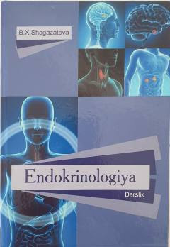

ETibbiyot oliygohlari talabalari uchun endokrinologiya fanidan rasmiy darslik.
Mazkur darslik tibbiyot oliygohlari talabalari uchun mo'ljallangan bo'lib, unda ichki sekretsiya bezlari anatomiyasi, fiziologiyasi, gormonlar ta'sir mexanizmlari hamda endokrin tizim kasalliklarining etiopatogenezi, klinik kechishi, tashxis va davolash usullari batafsil bayon etilgan. Shuningdek, qandli diabet, semizlik va qalqonsimon bez kasalliklari kabi dolzarb mavzular yoritilgan.